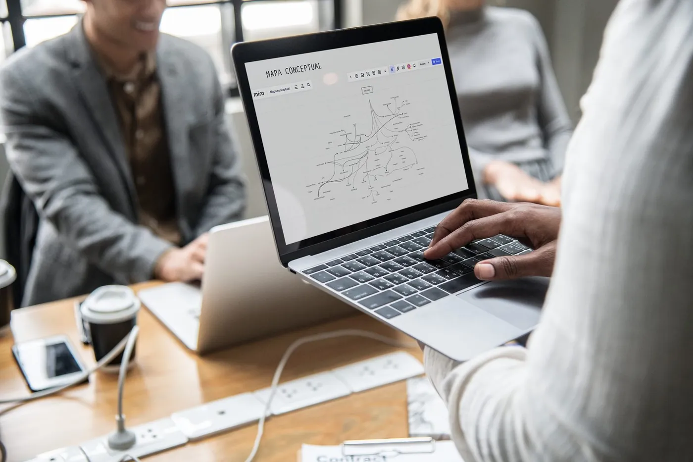
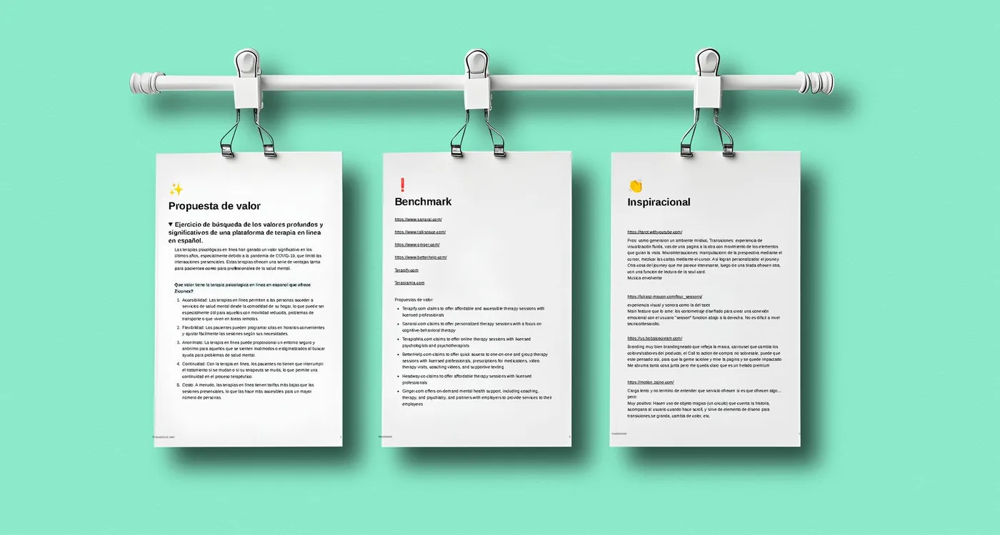
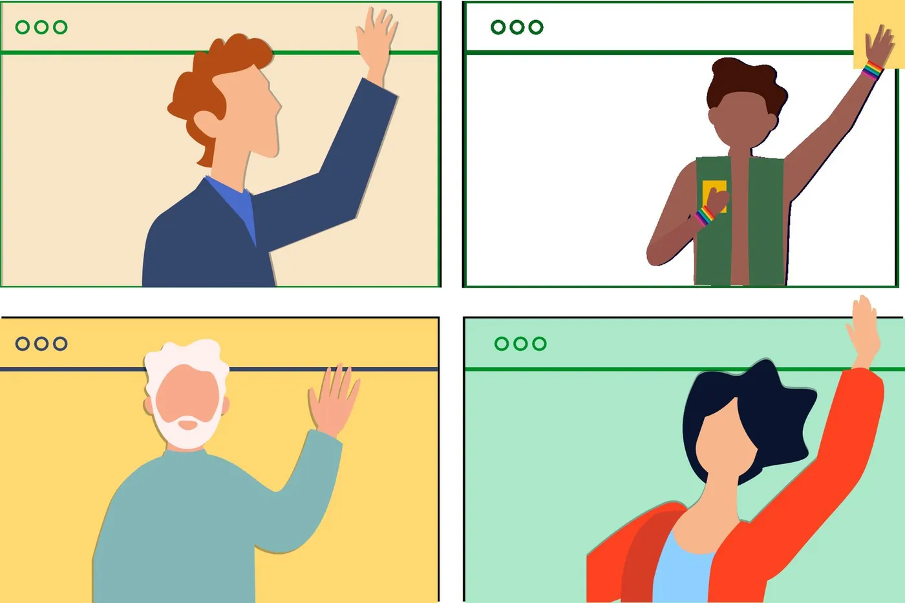
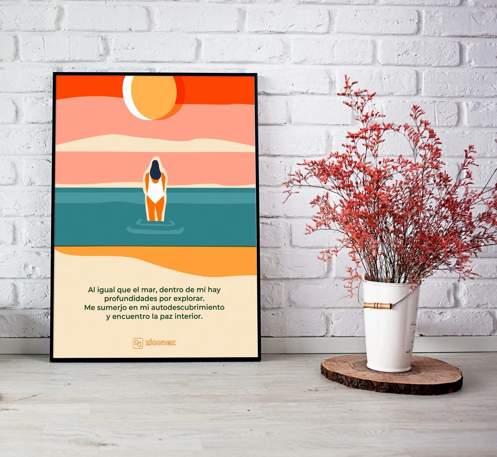
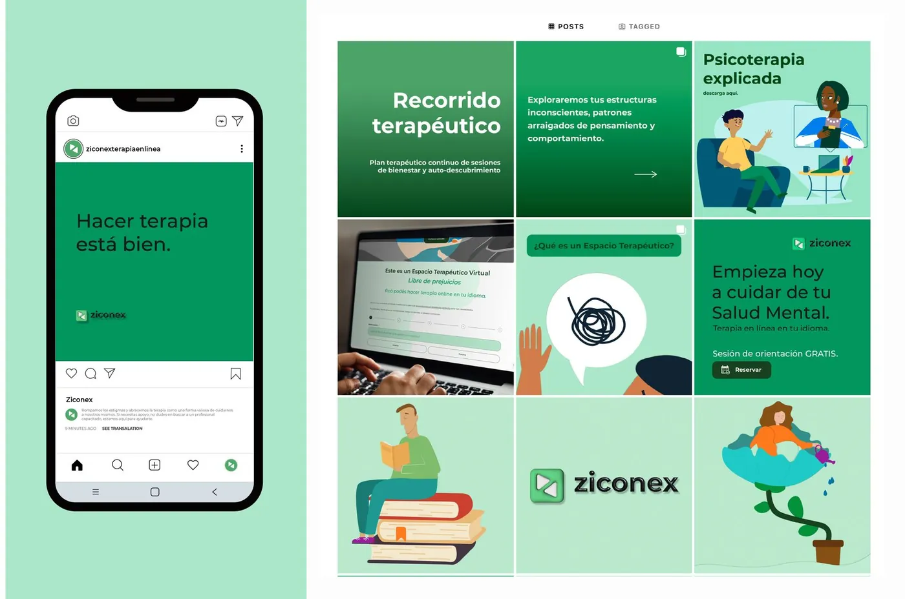
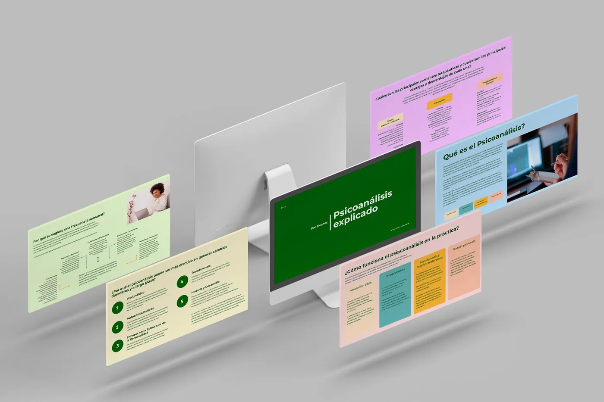
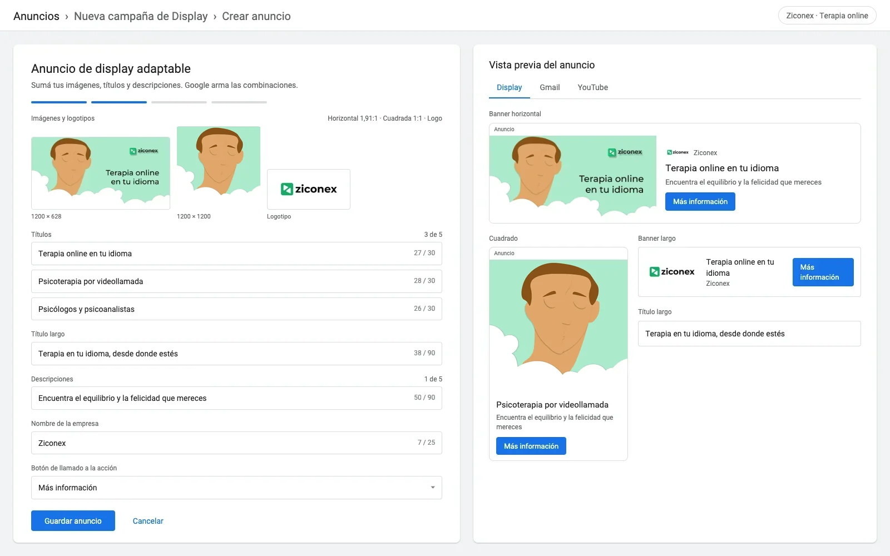
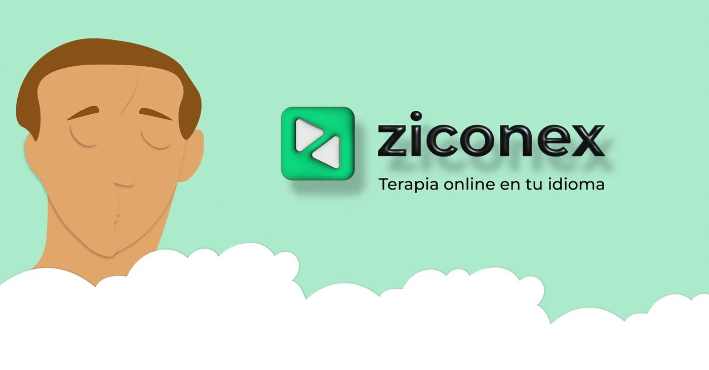
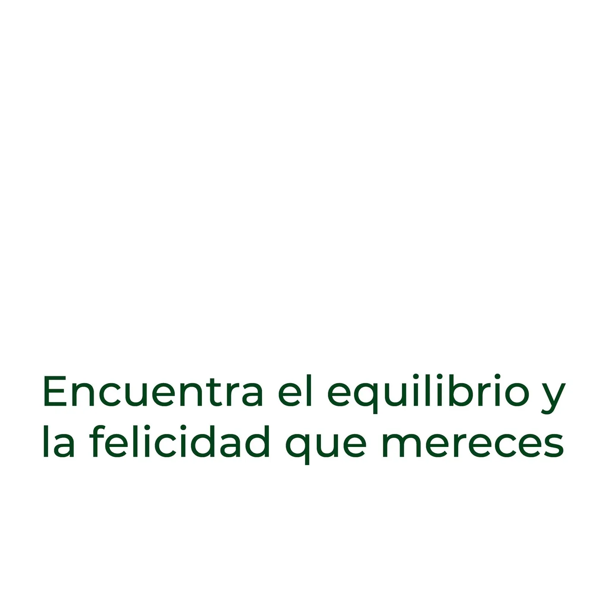

Ziconex: מותג אחד, פיד אחד ומערכת מודעות לטיפול אונליין בספרדית
Ziconex מציעה פסיכותרפיה אונליין בספרדית לאנשים שחיים בחו"ל. בשלושה חודשים הגדרתי את מפת הדרכים של המוצר ובניתי את המותג, הרשתות, מודעות Google ו-Meta והוויזואלים של האתר, כמערכת אחת.
טיפול בשפה שלך, מכל מקום
הקהל: דוברי ספרדית שהיגרו ורוצים להמשיך בטיפול, או להתחיל, עם איש מקצוע שמדבר בשפתם. המוצר הוא פלטפורמת פגישות בווידאו עם צוות קטן של פסיכולוגים ופסיכואנליטיקאים. העבודה: לגרום לו להיראות כמו מקום בטוח, להסביר איך עובד טיפול למי שמעולם לא עשה אותו ולהביא את הלקוחות הראשונים באמצעות מודעות.
מותג בריאות הנפש צריך להרגיש רגוע עוד לפני שהוא אומר משהו. הירוק, העננים והאיורים עושים את העבודה הזאת.
קודם מפת דרכים, אחר כך מותג
לפני כל עיצוב כתבתי את מפת הדרכים ואת דרישות המוצר, מיפיתי את השירות במפת מושגים ושמרתי הכול במרחב Notion שהצוות יכול היה לעקוב אחריו: הצעת ערך, benchmark, השראה ולוח תוכן.


החליקו הצידה או השתמשו בחצים. הקישו על צילום מסך כדי להגדיל אותו.
מרחב ירוק ובטוח
לוגו, צבע וסגנון איור: ירוק רך, לוגוטייפ מעוגל ודמויות שטוחות הצפות על עננים, שנושאות את כל הקמפיין, מהפיד ועד המודעות והאתר.

מגמה של 2023: איור שטוח, מואנש
האיורים האלה עוקבים אחרי מגמה ברורה של 2023. היא נולדה בחברות טכנולוגיה בשם Corporate Memphis, או סגנון Alegría: אנשים שטוחים, בצורות פשוטות, עם פרופורציות מוגזמות וצבעים חיים. באותה שנה הסגנון הפך חם יותר: מרקמים רכים, גווני עור טבעיים, מחוות קטנות ופלטות רגועות. הוא התאים לטיפול, כי הוא מראה אנשים אמיתיים מדברים בווידאו בלי ליפול לצילומי מלאי. לכן השתמשתי בו בכל המערכת.

להסביר טיפול, פוסט אחר פוסט
אינסטגרם ופייסבוק כמקום ללמד: מהי פסיכואנליזה, איך נראית פגישה ראשונה, המסלול הטיפולי והמחירים. קרוסלות, פוסטים בודדים, אנימציות קצרות ופיד עקבי. ביקורות של לקוחות הפכו לפוסטים של ציטוט.


החליקו הצידה או השתמשו בחצים. הקישו על צילום מסך כדי להגדיל אותו.
מודעות Google ומודעות רשתות על אותה מערכת
באנרים של display ל-Google Ads וקבוצות מודעות ב-Meta, שנבנו מאותם איורים ומשפט אחד, "Terapia online en tu idioma" (טיפול אונליין בשפה שלך), עם שורה שנייה לתועלת: "Encuentra el equilibrio y la felicidad que mereces" (מצאו את האיזון ואת האושר שמגיעים לכם). הרבה גדלים, מראה אחד.



עברו עם העכבר או הקישו על פריט כדי לראות מה הוא. הקישו להגדלה.
מה לקחתי איתי
- כשכתבתי קודם את מפת הדרכים, היה קל יותר לעמוד מאחורי כל החלטת עיצוב.
- מערכת איור אחת כיסתה מותג, רשתות, מודעות ואתר, ובשלושה חודשי עבודה בלבד המותג נראה עקבי.